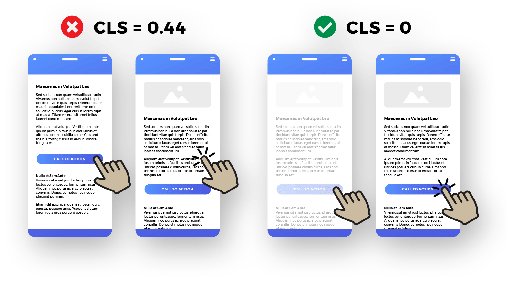

Unexpected layout shifts decreases your website's score in web vital metric, which is crucial for SEO. There're many things you can do to prevent it, one is using skeleton, the exact same size as the actual content that hasn't been loaded yet.
If you don't get it, just look at the video below ->
A sudden shift in layout makes the user confirm a large order they intended
to cancel. | From web.dev
Also, it just looks ugly, like below ->

See, when the image suddenly loads from nowhere, the content below goes some pixel down suddenly, which doesn't look good to the end user.
How to prevent it?
By using skeleton.
By giving the wrapper element a fixed size, which is the exact same as the content inside.
By setting size (with & height) to imgs, Iframes, and videos.
Also there're other way you can make it work, here's a great article ->